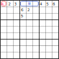
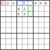
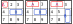
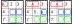
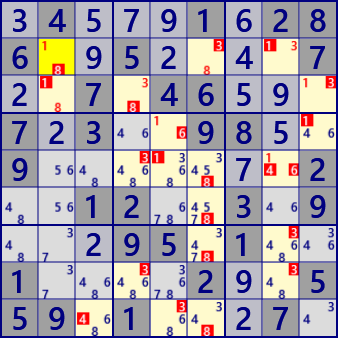
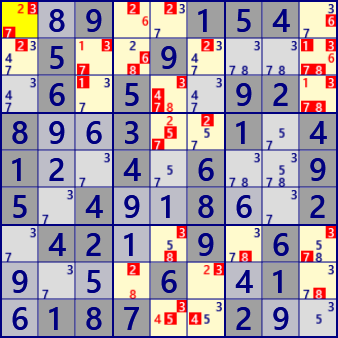

スーパーリンク
[注] スーパーリンクは、GNPX v4 まで用いています。
基本的な考え方は同じですが、拡張性から、GNPX v5 のコードでは、新たなリンク表現(eNetwork)に変更します。
数独の様々な解法で、セル間の強いリンクと弱いリンクが使われています。
リンクにはセル間リンク以外にも様々なものがあります。
AICはブロックに生じる複数セルの配置によるリンクです。
EmptyRectangleはAICとセル間リンクの組合せによるアルゴリズムです。
ALS系のアルゴリズムでは、ALSに生じる比較的単純なLinkを使っています。
セル間リンク、AIC、ALSリンクをスーパリンクと呼ぶことにします。将来その他の種類のリンクを含めることもあります。
ここでは、スーパーリンクを連結して用いるアルゴリズムを示します。
スーパーリンクのプログラムコードは、閲覧のみで理解するのは困難と思い、ここには示しません。
要素となるクラスは GNPXprojXXX に含めてあるので、ダウンロードして味わってください。
なお、スーパーリンクを利用する数独解析アルゴリズムのソース公開は、安定するまでしばらく保留します。
（1）AIC
左図のようにブロック1、2、3に数字が配置されているとします。
このときセルAの数字が1とすると、セル群Bの数字は￢1(￢:非,not,-で表すこともある)となります。これはセルAからセル群Bに弱いリンクあることになります。
ただし、左図のような配置ではA→Bの制約はその先につながらないので、意味がありません。
もしも右図のような配置のときは、A(1)→B(￢1)→C(1)とセル群Cに制約が伝わります。
また、A(￢1)→B(1)→C(￢1)でも制約が伝わります。右図には、A→BとB→Cおよびその反対向きの4つのリンクがあります。


改めてAICを定義します。セル群では、セル配置を延長する方向(House)から制約が伝わり、セル配置を延長する方向に制約が伝わります。
リンクのセル群Bが単独セルの場合には制約は複数の方向(複数のHouse)に伝わります。
| Strong / Weak link |
Cell group pattern example (There are cases where there are no candidate numbers (#n) for numeric display cells) |
Link | |
|---|---|---|---|
| Row (Column) | Strong Link | A(-#n)→ B(#n) B(-#n)→ A(#n) A(#n)→ B(-#n) B(#n)→ A(-#n) |
|
| Weak Link | A(#n)→ B(-#n) A(#n)→ C(-#n) B(#n)→ C(-#n) B(#n)→ A(-#n) C(#n)→ A(-#n) C(#n)→ B(-#n) |
||
| Block | Strong Link |  | A(-#n)→ B(#n) B(-#n)→ A(#n) A(#n)→ B(-#n) B(#n)→ A(-#n) |
| Weak Link |  | A(#n)→ B(-#n) A(#n)→ C(-#n) B(#n)→ C(-#n) B(#n)→ A(-#n) C(#n)→ A(-#n) C(#n)→ B(-#n) |
（2）ALSリンク
ALSは、ALS外のセルからの弱いリンクでALS内の数字(次図の#n)が除外されるとLockedSetに変わります。
この結果ALS内のセル(群)・数字(次図の#m)がALS外にリンクを形成する場合があります。このときのALS内では -#n→#m の強いリンクができています。
ALSリンクは、ALSがLockedSetに変わるときのリンクなのでALS内の弱いリンクはありません。
また、ALSリンクは、1つのALSの内部に生じるリンクであり、ALSリンクが生じるきっかけは外部からの弱いリンクのため、ALSリンクが連続することはありません。
必ずセル間リンクまたはAICが前後にあります。
（3）リンクの連結
スーパーリンクの連結は、セル間リンクの強リンクと弱リンクと同様に、強と弱があり、制約の伝わり方は同じです。
リンクの両端が単独のセルの場合にはセル・数字の真偽と決まりますが、複数セルの場合は、複数セルの真偽となり数字は確定しません。
しかしその先に真偽の情報は伝わります。
次の2つの図は、左上の黄色のセルの数字#1(図-1)および#2(図-2)が仮に真としたとき、スーパーリンクの連結でセル・数字の真偽が確定する様子です。
また、その連結の状況(真偽の根拠）を示しています。
【連結の表示方法】
・[...→...]はリンク、⇒はリンクの連結を表します。
・[]内先頭のSWは、リンクの強弱を表します。
・（ALS...）はALSリンク、<...>はAICです。
・/#nは数字nで、+は真、-は偽を表します。
図-1【r2c2/+1と仮定】

r2c6/-3 [W r2c2/+1 -> r2c8/-1] => [S (ALS:r2c68) r2c8/-1 -> r2c6/+8] => [W r2c6/+8 -> r2c6/-3]
r2c6/+8 [W r2c2/+1 -> r2c8/-1] => [S (ALS:r2c68) r2c8/-1 -> r2c6/+8]
r2c8/-1 [W r2c2/+1 -> r2c8/-1]
r2c8/+3 [W r2c2/+1 -> r2c8/-1] => [S r2c8/-1 -> r2c8/+3]
r3c2/-1 [W r2c2/+1 -> r3c2/-1]
r3c2/+8 [W r2c2/+1 -> r3c2/-1] => [S r3c2/-1 -> r3c2/+8]
r3c4/+3 [W r2c2/+1 -> r3c2/-1] => [S (ALS:r3c24) r3c2/-1 -> r3c4/+3]
r3c4/-8 [W r2c2/+1 -> r3c2/-1] => [S (ALS:r3c24) r3c2/-1 -> r3c4/+3] => [W r3c4/+3 -> r3c4/-8]
r3c9/+1 [W r2c2/+1 -> r2c8/-1] => [S r2c8/-1 -> r3c9/+1]
r3c9/-3 [W r2c2/+1 -> r2c8/-1] => [S r2c8/-1 -> r3c9/+1] => [W r3c9/+1 -> r3c9/-3]
r4c5/+1 [W r2c2/+1 -> r2c8/-1] => [S r2c8/-1 -> r3c9/+1] => [W r3c9/+1 -> r4c9/-1] => [S r4c9/-1 -> r4c5/+1]
r4c5/-6 [W r2c2/+1 -> r2c8/-1] => [S r2c8/-1 -> r3c9/+1] => [W r3c9/+1 -> r4c9/-1] => [S r4c9/-1 -> r4c5/+1] => [W r4c5/+1 -> r4c5/-6]
r4c9/-1 [W r2c2/+1 -> r2c8/-1] => [S r2c8/-1 -> r3c9/+1] => [W r3c9/+1 -> r4c9/-1]
r5c4/-3 [W r2c2/+1 -> r3c2/-1] => [W r3c2/+8 -> r3c4/-8] => [W r3c4/+3 -> r5c4/-3]
r5c5/-1 [W r2c2/+1 -> r2c8/-1] => [S r2c8/-1 -> r5c8/+1] => [W r5c8/+1 -> r5c5/-1]
r5c6/-8 [W r2c2/+1 -> r2c8/-1] => [W r2c8/+3 -> r2c6/-3] => [W r2c6/+8 -> r5c6/-8]
r5c8/+1 [W r2c2/+1 -> r2c8/-1] => [S r2c8/-1 -> r5c8/+1]
r5c8/-4 [W r2c2/+1 -> r2c8/-1] => [S r2c8/-1 -> r5c8/+1] => [W r5c8/+1 -> r5c8/-4]
r5c8/-6 [W r2c2/+1 -> r2c8/-1] => [S r2c8/-1 -> r5c8/+1] => [W r5c8/+1 -> r5c8/-6]
r6c6/-8 [W r2c2/+1 -> r2c8/-1] => [W r2c8/+3 -> r2c6/-3] => [W r2c6/+8 -> r6c6/-8]
r7c6/-8 [W r2c2/+1 -> r2c8/-1] => [W r2c8/+3 -> r2c6/-3] => [W r2c6/+8 -> r7c6/-8]
r7c8/-3 [W r2c2/+1 -> r2c8/-1] => [W r2c8/+3 -> r7c8/-3]
r8c4/-3 [W r2c2/+1 -> r3c2/-1] => [W r3c2/+8 -> r3c4/-8] => [W r3c4/+3 -> r8c4/-3]
r8c8/-3 [W r2c2/+1 -> r2c8/-1] => [W r2c8/+3 -> r8c8/-3]
r9c3/-4 [W r2c2/+1 -> r2c8/-1] => [W r2c8/+3 -> r2c6/-3] => [W r2c6/+8 -> r9c6/-8]
=> [S (ALS:r9c69) r9c6/-8 ->
r9c5/-3 [W r2c2/+1 -> r2c8/-1] => [W r2c8/+3 -> r2c6/-3] => [W r2c6/+8 -> r9c6/-8]
=> [S (ALS:r9c69) r9c6/-8 ->
r9c6/-8 [W r2c2/+1 -> r2c8/-1] => [W r2c8/+3 -> r2c6/-3] => [W r2c6/+8 -> r9c6/-8]
.4...1.286..5....7..7.46...7.3..98..9.......2..12..3.9...95.1..1....2..559.1...7.
図-2【r1c1/+2と仮定】

r1c4/-2 [W r1c1/+2 -> r1c4/-2]
r1c4/+6 [W r1c1/+2 -> r1c4/-2] => [S r1c4/-2 -> r1c4/+6]
r1c5/-2 [W r1c1/+2 -> r1c5/-2]
r1c9/-6 [W r1c1/+2 -> r1c4/-2] => [W r1c4/+6 -> r1c9/-6]
r2c1/-2 [W r1c1/+2 -> r2c1/-2]
r2c3/+1 [W r1c1/+2 -> r1c4/-2] => [W r1c4/+6 -> r1c9/-6] => [S r1c9/-6 -> r2c9/+6]
=> [S r2c9/-1 -> r2c3/+1]
r2c3/-3 [W r1c1/+2 -> r1c4/-2] => [W r1c4/+6 -> r1c9/-6] => [S r1c9/-6 -> r2c9/+6]
=> [S r2c9/-1 -> r2c3/+1] => [W r2c3/+1 -> r2c3/-3]
r2c3/-7 [W r1c1/+2 -> r1c4/-2] => [W r1c4/+6 -> r1c9/-6] => [S r1c9/-6 -> r2c9/+6]
=> [S r2c9/-1 -> r2c3/+1] => [W r2c3/+1 -> r2c3/-7]
r2c4/-6 [W r1c1/+2 -> r1c4/-2] => [W r1c4/+6 -> r2c4/-6]
r2c4/-8 [W r1c1/+2 -> r1c4/-2] => [W r1c4/+6 -> r1c9/-6] => [S (ALS:r1c9 r2c78) r1c9/-6 ->
r2c6/-2 [W r1c1/+2 -> r1c4/-2] => [W r1c4/+6 -> r1c9/-6] => [S (ALS:r1c9 r2c78) r1c9/-6 ->
r2c9/-1 [W r1c1/+2 -> r1c4/-2] => [W r1c4/+6 -> r1c9/-6] => [S r1c9/-6 -> r2c9/+6] => [W r2c9/+6 -> r2c9/-1]
r2c9/-3 [W r1c1/+2 -> r1c4/-2] => [W r1c4/+6 -> r1c9/-6] => [S r1c9/-6 -> r2c9/+6] => [W r2c9/+6 -> r2c9/-3]
r2c9/+6 [W r1c1/+2 -> r1c4/-2] => [W r1c4/+6 -> r1c9/-6] => [S r1c9/-6 -> r2c9/+6]
r2c9/-7 [W r1c1/+2 -> r1c4/-2] => [W r1c4/+6 -> r1c9/-6] => [S r1c9/-6 -> r2c9/+6] => [W r2c9/+6 -> r2c9/-7]
r2c9/-8 [W r1c1/+2 -> r1c4/-2] => [W r1c4/+6 -> r1c9/-6] => [S r1c9/-6 -> r2c9/+6] => [W r2c9/+6 -> r2c9/-8]
r3c3/-1 [W r1c1/+2 -> r1c4/-2] => [W r1c4/+6 -> r1c9/-6] => [S (ALS:r1c9 r2c78 r3c9) r1c9/-6 -> r3c9/+1] => [W r3c9/+1 -> r3c3/-1]
r3c5/-3 [W r1c1/+2 -> r1c4/-2] => [W r1c4/+6 -> r1c9/-6] => [S (ALS:r1c9 r2c78 r3c9) r1c9/-6 -> r3c9/+1] => [W r3c9/+1 -> r3c3/-1]
=> [S (ALS:r3c1356) r3c3/-1 -> r3c5/+8] => [W r3c5/+8 -> r3c5/-3]
r3c5/-4 [W r1c1/+2 -> r1c4/-2] => [W r1c4/+6 -> r1c9/-6] => [S (ALS:r1c9 r2c78 r3c9) r1c9/-6 -> r3c9/+1] => [W r3c9/+1 -> r3c3/-1]
=> [S (ALS:r3c1356) r3c3/-1 -> r3c5/+8] => [W r3c5/+8 -> r3c5/-4]
r3c5/-7 [W r1c1/+2 -> r1c4/-2] => [W r1c4/+6 -> r1c9/-6] => [S (ALS:r1c9 r2c78 r3c9) r1c9/-6 -> r3c9/+1] => [W r3c9/+1 -> r3c3/-1]
=> [S (ALS:r3c1356) r3c3/-1 -> r3c5/+8] => [W r3c5/+8 -> r3c5/-7]
r3c5/+8 [W r1c1/+2 -> r1c4/-2] => [W r1c4/+6 -> r1c9/-6] => [S (ALS:r1c9 r2c78 r3c9) r1c9/-6 -> r3c9/+1] => [W r3c9/+1 -> r3c3/-1]
=> [S (ALS:r3c1356) r3c3/-1 -> r3c5/+8]
r3c9/+1 [W r1c1/+2 -> r1c4/-2] => [W r1c4/+6 -> r1c9/-6] => [S (ALS:r1c9 r2c78 r3c9) r1c9/-6 -> r3c9/+1]
r3c9/-3 [W r1c1/+2 -> r1c4/-2] => [W r1c4/+6 -> r1c9/-6] => [S (ALS:r1c9 r2c78 r3c9) r1c9/-6 -> r3c9/+1] => [W r3c9/+1 -> r3c9/-3]
r3c9/-7 [W r1c1/+2 -> r1c4/-2] => [W r1c4/+6 -> r1c9/-6] => [S (ALS:r1c9 r2c78 r3c9) r1c9/-6 -> r3c9/+1] => [W r3c9/+1 -> r3c9/-7]
r3c9/-8 [W r1c1/+2 -> r1c4/-2] => [W r1c4/+6 -> r1c9/-6] => [S (ALS:r1c9 r2c78 r3c9) r1c9/-6 -> r3c9/+1] => [W r3c9/+1 -> r3c9/-8]
r4c5/+2 [W r1c1/+2 -> r1c5/-2] => [S r1c5/-2 -> r4c5/+2]
r4c5/-5 [W r1c1/+2 -> r1c5/-2] => [S r1c5/-2 -> r4c5/+2] => [W r4c5/+2 -> r4c5/-5]
r4c5/-7 [W r1c1/+2 -> r1c5/-2] => [S r1c5/-2 -> r4c5/+2] => [W r4c5/+2 -> r4c5/-7]
r4c6/-2 [W r1c1/+2 -> r1c5/-2] => [S r1c5/-2 -> r4c5/+2] => [W r4c5/+2 -> r4c6/-2]
r7c5/-3 [W r1c1/+2 -> r1c4/-2] => [W r1c4/+6 -> r1c9/-6] => [S (ALS:r1789c9) r1c9/-6 ->
r7c5/-8 [W r1c1/+2 -> r1c4/-2] => [W r1c4/+6 -> r1c9/-6] => [S (ALS:r1c9 r2c78 r3c9) r1c9/-6 -> r3c9/+1] => [W r3c9/+1 -> r3c3/-1]
=> [S (ALS:r3c1356) r3c3/-1 -> r3c5/+8] => [W r3c5/+8 -> r7c5/-8]
r7c7/-8 [W r1c1/+2 -> r1c4/-2] => [W r1c4/+6 -> r1c9/-6] => [S (ALS:r1789c9) r1c9/-6 ->
r7c9/-3 [W r1c1/+2 -> r1c4/-2] => [W r1c4/+6 -> r1c9/-6] => [S (ALS:r1789c9) r1c9/-6 ->
r7c9/-7 [W r1c1/+2 -> r1c4/-2] => [W r1c4/+6 -> r1c9/-6] => [S (ALS:r1789c9) r1c9/-6 ->
r8c4/-2 [W r1c1/+2 -> r1c4/-2] => [W r1c4/+6 -> r1c9/-6] => [S (ALS:r1c9 r2c78) r1c9/-6 ->
r8c4/+8 [W r1c1/+2 -> r1c4/-2] => [W r1c4/+6 -> r1c9/-6] => [S (ALS:r1c9 r2c78) r1c9/-6 ->
r8c6/+2 [W r1c1/+2 -> r1c4/-2] => [W r1c4/+6 -> r1c9/-6] => [S (ALS:r1c9 r2c78) r1c9/-6 ->
r8c6/-3 [W r1c1/+2 -> r1c4/-2] => [W r1c4/+6 -> r1c9/-6] => [S (ALS:r1c9 r2c78) r1c9/-6 ->
r8c9/-8 [W r1c1/+2 -> r1c4/-2] => [W r1c4/+6 -> r1c9/-6] => [S (ALS:r1c9 r2c78) r1c9/-6 ->
r9c5/-3 [W r1c1/+2 -> r1c4/-2] => [W r1c4/+6 -> r1c9/-6] => [S (ALS:r1c9 r2c78 r3c9) r1c9/-6 -> r3c9/+1] => [W r3c9/+1 -> r3c3/-1]
=> [S (ALS:r3c1356) r3c3/-1 -> r3c5/+8] => [W r3c5/+8 -> r7c5/-8] => [S (ALS:r14579c5) r7c5/-8 -> r9c5/+4] => [W r9c5/+4 -> r9c5/-3]
r9c5/+4 [W r1c1/+2 -> r1c4/-2] => [W r1c4/+6 -> r1c9/-6] => [S (ALS:r1c9 r2c78 r3c9) r1c9/-6 -> r3c9/+1] => [W r3c9/+1 -> r3c3/-1]
=> [S (ALS:r3c1356) r3c3/-1 -> r3c5/+8] => [W r3c5/+8 -> r7c5/-8] => [S (ALS:r14579c5) r7c5/-8 -> r9c5/+4]
r9c5/-5 [W r1c1/+2 -> r1c4/-2] => [W r1c4/+6 -> r1c9/-6] => [S (ALS:r1c9 r2c78 r3c9) r1c9/-6 -> r3c9/+1] => [W r3c9/+1 -> r3c3/-1]
=> [S (ALS:r3c1356) r3c3/-1 -> r3c5/+8] => [W r3c5/+8 -> r7c5/-8] => [S (ALS:r14579c5) r7c5/-8 -> r9c5/+4] => [W r9c5/+4 -> r9c5/-5]
r9c6/-4 [W r1c1/+2 -> r1c4/-2] => [W r1c4/+6 -> r1c9/-6] => [S (ALS:r1c9 r2c78) r1c9/-6 ->
..9..154..5..9.....6.5..92.8..3..1.41..4.6..95.4..8..2.42..9.6.....6..1..187..2..
スーパーリンクの連結は極めて強力な手法です。上に述べた方法は、ForceChain(Cell,House)、KrakenFish、GroupedNiceLoopに用いています。
また、次のような利用方法もあります。
あるセル・数字を真と仮定すると、スーパーリンクの連結で他のセル・数字が真および偽の両方が導けることがあります。
これは矛盾であり、最初の仮定が誤りです。この手法も、ForceChain 解法の一種です。
図-3【/+nと/-nの両方が導ける】
r1c6/#8 is false
[W r1c6/+8 -> r5c6/-8] => [S r5c6/-8 -> r5c7/+8] => [W r5c7/+8 -> r2c7/-8] => [S r2c7/-8 -> r2c8/+8] => [W r2c8/+8 -> r8c8/-8]
[W r1c6/+8 -> r5c6/-8] => [S r5c6/-8 -> r5c7/+8] => [W r5c7/+8 -> r8c7/-8] => [S r8c7/-8 -> r8c8/+8]
.9..4..6.4..15...2..6..91....4....7.36.....15.8....3....82..4..9...34..1.4..8..3.